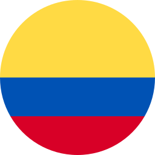
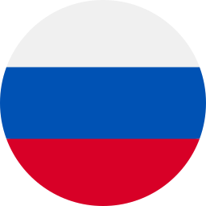

Idiomas
Mi objetivo es aprender idiomas que me permitan mejorar la comunicación y acceder a nuevas oportunidades
- 
-

- 
Mi nombre es Juan David, estudiante de Ingeniería de Sistemas en la Universidad de la Amazonia. A lo largo de mi formación he desarrollado proyectos principalmente en el lenguaje Java, lo que me ha permitido fortalecer mis bases en programación y estructuras de datos. Actualmente estoy incursionando en el desarrollo de aplicaciones web y participando en actividades investigativas orientadas a la innovación y el desarrollo tecnológico
Mi objetivo es aprender idiomas que me permitan mejorar la comunicación y acceder a nuevas oportunidades
A lo largo de mi formación he trabajado con diversos lenguajes de programación, cada uno con sus propias características y aplicaciones. A continuación, se presentan algunos de los lenguajes que he utilizado:


Creación de proyectos y aplicaciones utilizando Java y Java Swing. Desarrollo de programas funcionales y bien estructurados que sirven como base para soluciones educativas y prácticas profesionales.
Elaboración de páginas web sencillas, pensadas para mostrar información de manera clara y atractiva. Ideal para proyectos académicos, portafolios personales o sitios informativos básicos.
Apoyo en trabajos investigativos relacionados con la innovación tecnológica, automatización y programación. Desarrollo de prototipos y soluciones iniciales que integran distintas herramientas de software.
Diseño y vectorización de logotipos e imágenes digitales, con un enfoque en la simplicidad y la claridad visual, para uso en páginas web o proyectos personales.
Actualmente estoy en proceso de aprendizaje continuo, explorando nuevas tecnologías y herramientas que complementen mis habilidades existentes. Estoy abierto a cursos y recursos que me permitan crecer profesionalmente y adaptarme a las demandas del mercado laboral.